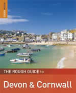

Pasty & Sandwich Takeaways in Penzance
- Cindy's Bakery (01736 351616)
Camelot Court, Alverton Street, Penzance
- AJ's Eats & Treats (01736 331599)
40-42 Causewayhead, Penzance
- Mounts Bay Pasty Co. (01736 333209)
8 Market Jew Street, Penzance
- Penzance Pasty Co. (01736 331330)
85 Market Jew Street, Penzance
- Rowe & Co (01736 333193)
72-73 Causewayhead, Penzance
www.wcrowe.com
- Subway (01736 874605)
68 Causewayhead, Penzance
- Terrace Sandwich Bar
15 Market Jew Street
 - Warrens Bakery & Café (01736 362746)
- Warrens Bakery & Café (01736 362746)
11 Market Jew Street, Penzance
- Warrens Bakery (01736 362788)
33 Alverton Street, Penzance
- Warrens Bakery & Café (01736 363268)
87 Market Jew Street, Penzance
Rough Guide to Devon & Cornwall The Rough Guide to Devon & Cornwall" is the ultimate handbook for discovering the hidden gems Cornwall has to offer. Foodies are directed to the regions best restaurants and most authentic pubs with all the region's diverse food and drink highlights explored and explained. |